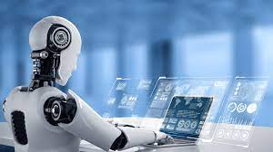

SVREC Technologies
SVREC TechnologiesWhat is automation?
Automation is defined as a wide range of technologies that minimize human intervention in processes. By predetermining decision criteria, subprocess linkages, and related actions, and embodying those predeterminations in computers - human intervention is decreased.
Automation is the use of machines to perform previously performed by humans or, increasingly, jobs that would be impossible without them. Although "mechanization" is frequently used to refer to the simple replacement of human labour with machines, automation generally refers to the integration of machines into a self-governing system. There is hardly a part of modern life that has not been impacted by automation, which has revolutionized the fields in which technology has been used.
The term "automation" first used in the automobile industry around 1946 to describe the expanding use of automatic machinery and controls in mechanized manufacturing lines. The phrase is given to D.S. Harder, a manager of engineering at Ford Motor Company at the time. The phrase is frequently used in the context of manufacturing, but it is also used outside of manufacturing in relation to a number of systems where human effort and intelligence are significantly replaced by mechanical, electrical, or computational activity.
In general, technology that automates a process entails employing preprogramd commands and automatic feedback control to ensure the instructions are followed correctly. The system that is created can function without human input. For the advancement of this technology, the use of computers and computer-related technologies has become more and more crucial. As a result, automated systems have grown more complicated and intelligent. In many aspects, the capabilities and performance of advanced systems are superior to those of humans to carry out the same tasks.
A number of different technologies have evolved from automation technology to the point that they are now recognized and have their own status. One of these technologies is robotics, a subset of automation in which the automated machine exhibits a number of anthropomorphic, or human-like, traits. A modern industrial robot's powered mechanical arm is what most resembles a human arm. The robot's arm can be programed to move through a series of motions to carry out practical tasks like loading and unloading components at a production machine or completing a series of spot welds on the sheet metal components of an automotive body during assembly. Industrial robots are frequently utilized to replace human labour in manufacturing settings, as these instances indicate.
The fundamentals of automation are covered in this article, along with their historical development, operating principles, applications in manufacturing, some key services, and industries that affect daily life, as well as their effects on both the individual and society at large. The article also examines robots' technological advancements as a crucial aspect of automation.
Historical development of automation
The Industrial Revolution gave birth to the related field of mechanization, which gave rise to the technology of automation. The process of mechanization involves using some mechanical power in place of human (or animal) power. Humanity's proclivity to make tools and mechanical devices have been the driving force behind mechanization. Here are some of the significant historical mechanization and automation advances that helped pave the way for contemporary automated systems.
Early developments
Prehistoric man's early attempts to use his physical strength under the control of human intelligence can be seen in the first stone-made implements. The creation of rudimentary mechanical tools and machineries like the wheel, the lever, and the pulley that could increase the strength of human muscle unquestionably took thousands of years. The next expansion was the creation of powered devices that could be operated without the use of human strength. These include simple steam-driven devices, windmills, and waterwheels as examples. Trip hammers, which are propelled by water and waterwheels, were invented by the Chinese more than 2,000 years ago. Early Greeks experimented with straightforward steam-powered reaction motors. The mechanical clock, a relatively intricate construction with weight as its own internal power source, was created in Europe in 1335. In Europe and the Middle East, windmills with automatic sail-turning machinery were invent\ted throughout the Middle Ages. The invention of the steam engine signaled the start of the Industrial Revolution and represented a significant advancement in the design of propelled machinery. Since the Watt steam engine was invented two centuries ago, people have developed powered devices and engines that draw power from steam, electricity, chemical, mechanical, and nuclear sources.
In the history of powered machines, every new advancement raised the need for control mechanisms to harness the machine's power. In order to allow steam into the piston chamber and exhaust it, a person had to open and close valves on the earliest steam engines. Later, a slide valve mechanism was developed to carry out these tasks automatically. The sole task left for the human operator was to control the amount of steam that determined how quickly and powerfully the engine ran.
The flying-ball governor did away with the need for human involvement in the steam engine's operation. This device was created by James Watt in England and consisted of a weighted ball on a hinged arm that was mechanically connected to the engine's output shaft. The centrifugal force caused the weighted ball to move outward as the shaft's rotational speed rose. This movement managed a valve that decreased the amount of steam given to the engine, slowing it down as a result. The flying-ball governor is nevertheless a beautiful early illustration of a negative feedback control system in which the system's rising output is utilized to lower its activity.
A common technique for automatic control to maintain a system's operational level is negative feedback. The thermostat used to regulate room temperature in modern buildings is a typical illustration of a feedback control system. In this gadget, as the ambient temperature drops, an electrical switch closes, activating the heating element. The switch opens as the temperature rises, cutting off the heat source. The heating system can be turned on by the thermostat at any specified set point.
Modern developments
The digital computer, advancements in data storage and software used to generate computer programs, improvements in sensor technology, and the development of a mathematical control theory are just a few of the key discoveries that took place throughout the 20th century in a variety of sectors. The advancement of automation technology has benefited from all of these advancements.
Automation's control function has advanced significantly thanks to electronic digital computers like the ENIAC [Electronic Numerical Integrator and Computer] in 1946 and UNIVAC I [Universal Automatic Computer] in 1951. These machines also allowed for the completion of related calculations much more quickly than was previously possible. A trend toward downsizing in computer technology that began with the creation of integrated circuits in the 1960s has produced devices that are far smaller and less expensive than their predecessors while yet being able to conduct calculations at much higher speeds. The microprocessor, a tiny multi-circuited device that can carry out all the logical and mathematical operations of a big digital computer, serves as a modern example of this tendency.
Finally, since World War II, a fairly complex mathematical theory of control systems has emerged. The theory covers conventional negative feedback control, optimum control, adaptive control, and artificial intelligence. Traditional feedback control theory investigates problems using linear ordinary differential equations, just like Watt's flying-ball governor. Even while most processes are more complicated than the flying-ball governor, they nonetheless adhere to the same physical principles that differential equations use to explain them. Both optimal control theory and adaptive control theory attempt to solve the challenge of choosing an appropriate performance metric for the process of interest and then operating it in a manner that optimises performance. Adaptive control differs from optimal control in that it must be used in situations where the environment is constantly changing and unpredictable, necessitating sensor measurements of the surroundings in order to perform the control plan.
Principles and theory of automation
The three fundamental components of automation-a source of power to carry out some activity, feedback controls, and machine programming-have been made available by the innovations mentioned above. An automated system will typically display all of these characteristics.
Automation in daily life
Automation technology has made considerable advancements outside of the manufacturing sector, including in the fields of communications, transportation, services, and consumer goods. In this section, some of the more important applications are discussed.
Communications
Telephone switching was one of the first actual applications of automation. Near the end of the 19th century, simple mechanical switches were developed as the first switching machines. These switches could be operated remotely by dialling or pressing buttons on a telephone. Modern electronic telephone switching systems are based on extremely sophisticated digital computers that perform operations such as monitoring tens of thousands of telephone lines, determining which lines require service, storing the numbers as they are dialled, establishing the necessary connections, sending electrical signals to ring the receiver's phone, monitoring the call as it progresses, and disconnecting the phone when the call is over.
Service industries
Applications for service industry automation are as varied as the services themselves, which include banking and other financial services, retail trade, government, and health care. In order to improve services and lessen the workload on the medical staff, automation in the form of computer systems has grown significantly. Computer terminals keep track of the patient's condition, drugs taken, and other pertinent data on each nursing care level in hospitals. Some of these systems can also be used to order medications from the hospital pharmacy and make calls for orderlies, among other extra tasks. The system gives a formal record of the nursing care provided to patients, and the nursing staff uses it to present a report when shifts change. The hospital's business office is connected to the computer system so that the correct charges for the services rendered and medications are given to each patient can be made.
Transportation
The transportation industry has used automation in a variety of ways. Applications include automated pilots in aircraft and trains, urban mass-transit systems, and airline reservation systems. The airlines regularly track the status of every aircraft using computerized reservation systems. These methods enable ticket sales representatives to quickly learn the number of seats that are available on any aircraft from locations that are far apart. When space is available, the reservation systems check space requests with each flight's status, fill requests, and automatically update the reservation status files. Even before the departure of the flight, passengers can get their seat allocations.
Advantages and disadvantages of automation
Increased production rates and productivity, greater product quality, enhanced safety, shorter labour workweeks, and shorter lead times in factories are all benefits that are frequently attributed to automation. In most cases, the use of automation has been justified by higher output and better productivity. Despite the promises of high quality made by human workers due to their expert labour, automated systems frequently complete the production process more consistently than human workers, resulting in better control and consistency of product quality. Additionally, improved process control uses resources more effectively, producing less scrap.
An industrial activity should be automated for a number of reasons, including worker safety. Workers are frequently taken out of the workplace by automated systems, protecting them from the dangers of the factory setting. With the national goal of making work safer and preserving the physical well-being of employees, the Occupational Safety and Health Act of 1970 (OSHA) was passed in the United States. The use of automation and robotics in the factory has been encouraged by OSHA.
The reduction in the average weekly hours worked by factory workers is another advantage of automation. Around 1900, a workweek consisted of roughly 70 hours. This has subsequently decreased to a typical workweek of roughly 40 hours in the United States. Automation and mechanization have been quite important in this decrease. And finally, automation typically cuts down on the amount of time needed to process a standard production order through the facility.
Worker displacement has already been mentioned as a major drawback of automation. Almost always, a person whose job has been replaced by a machine experiences a period of emotional stress, despite any potential social advantages from retraining displaced workers for alternative jobs. The worker may also be geographically displaced in addition to being uprooted from their place of employment. An individual might need to move in order to obtain new employment, which is another stressful situation.
The high capital investment required to invest in automation (designing, fabricating, and installing an automated system can cost millions of dollars), the need for more maintenance than with a manually operated machine, and a general lack of flexibility in terms of the possible products compared to a manual system are other drawbacks of automated equipment (even flexible automation is less flexible than humans, the most versatile machines of all).
Despite these risks, automation technology can produce significant benefits for the future if employed efficiently and intelligently. Humans can be liberated from all types of monotonous, dangerous, and unpleasant labour. Additionally, there is a chance that developing social and economic conditions may allow people to live better lives and have higher standards of living thanks to future automation technology.